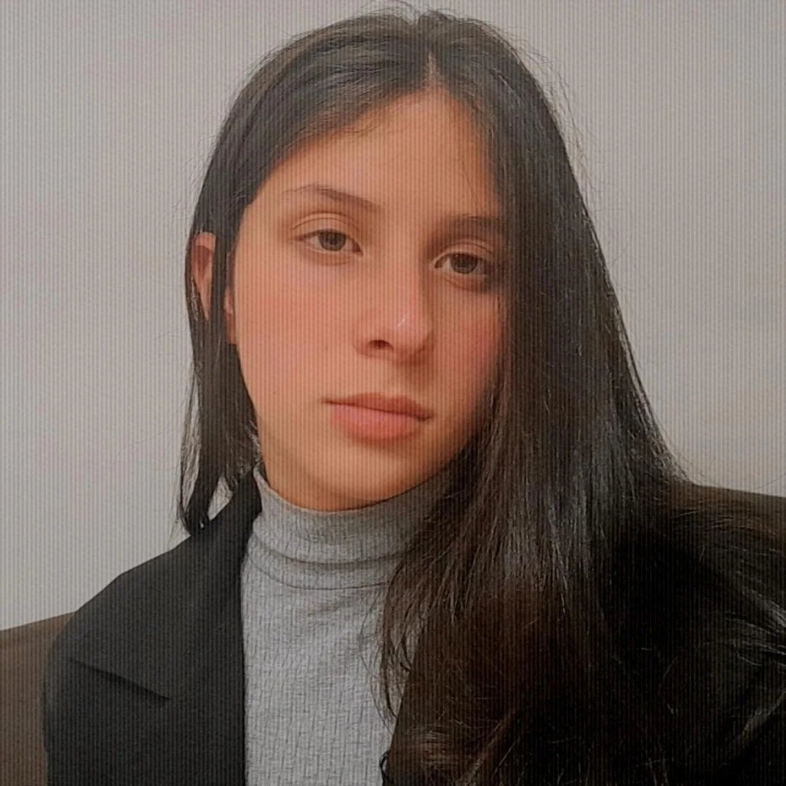

● ● ●
UNIVERSYNSeu universo
de estudos.✦
de estudos.✦
01 / PROJETO PESSOAL
↗Universyn
Uma experiência de estudos com foco, tarefas e organização.
OI, PRAZER
Tenho 17 anos, moro em Itu e estudo Desenvolvimento de Sistemas na Etec. Gosto de tecnologia e de descobrir, na prática, como sites e aplicativos são feitos.

Estou estudando Desenvolvimento de Sistemas e conhecendo diferentes áreas dentro da tecnologia. Ainda estou descobrindo qual caminho combina mais comigo.
Gosto de aprender fazendo, testar ideias e criar projetos que me ajudam a entender melhor o que estudo.
Fale comigo →Ferramentas e tecnologias que fazem parte dos meus estudos e dos meus projetos.
Projetos acadêmicos e pessoais que fazem parte do meu aprendizado.
Uma experiência de estudos com foco, tarefas e organização.
Landing page para apresentar uma marca, seu ambiente e suas experiências.
Uma aplicação web com ferramentas simples para ajudar nas tarefas do dia a dia.
Projeto de TCC desenvolvido em equipe para criar uma experiência de conversa online.
Projeto visual desenvolvido no Figma, explorando uma interface inspirada em aprendizado.
Projeto de design de interface criado no Figma com foco em alimentação e saúde.
Estudo visual desenvolvido no Figma para experimentar composição, cores e navegação.
Se quiser conhecer melhor meu trabalho ou trocar uma ideia, meu GitHub e meu e-mail estão aqui.